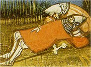

Køiáci

Hrad císaøe Fridricha II. Castel del Monte stojí v Itálii nedaleko mìsta L’Aquila.
|
SVÌTSKÁ LITERATURA
Období støedovìku bylo plné válek a soubojù, co se odrazilo hlavnì v písemnictví svìtském. Zatímco v náboenském umìní byl ideálem svìtec, v dvorské literatuøe to byl rytíø. Také rytíø byl bohabojnı køesan a základní hodnotou pro nìj byla èest. Na jedné stranì byl rytíø odvánı bojovník, kterı oddanì slouil panovníkovi a bránil køesanskou víru, na stranì druhé to byl citlivı mu, kterı by udìlal vše pro enu svého srdce, i kdyby byla manelkou nìkoho jiného. Alespoò tak to popisují støedovìká literární díla – hrdinské eposy, rytíøská epika a dvorská lyrika.
Køesanské ideály prostupovaly celou støedovìkou spoleènost. Køíové vıpravy byla vojenská taení, která podporoval pape i císaø Svaté øíše øímské. Jejich cílem bylo osvobodit Jeruzalém, kde se nachází Boí hrob, od nadvlády muslimù. Také Panna orleánská (Jana z Arku) vedla ve jménu víry francouzská vojska proti Anglièanùm, a pøestoe byla upálena jako kacíøka, došlo pozdìji k jejímu svatoøeèení.
Tyto vzory nebylo snadné následovat. Vdy i samotní pøedstavitelé církve èasto porušovali Desatero nebo usilovali více o svìtské statky a poitky ne o duchovní spásu. Proto se stali terèem posmìškù a satir, které skládali hlavnì áci (studenti univerzit). ákovská poezie je velmi rozpustilá a èasto zlehèuje i samotné tvùrce.
Cestopisnou literaturu ovlivnila víra v zázraky a fantastické svìty.
|
Historie
Bìhem støedovìku se mapa Evropy nìkolikrát vıznamnì zmìnila. Na troskách západoøímské øíše vznikla øada barbarskıch státù. Nejvìtšího vlivu dosáhla franská øíše (482-843) bìhem vlády Karla Velikého (768-814), ale brzy se rozpadla na 3 èásti (pozdìjší Francie a oblasti Itálie a Nìmecka). Území Ostrogótù, Vandalù a Vizigótù získala nejdøíve Byzanc, ale pozdìji ho dobyli Arabové. Ve zbytku Evropy vznikají menší státy (Anglie, Švédsko, Bulharsko, Èechy…).
Volenı císaø Svaté øíše øímské (zaloena Otou I. v roce 962) mìl bıt protiváhou papee, kterı usiloval o svìtskou moc. Køíové vıpravy (1095-1270) proti muslimùm skonèily neúspìchem, vznikly pouze nové rytíøské øády (templáøi, johanité...).
|
Národní hrdinské eposy
Støedovìké eposy èerpají námìty z bájné historie evropskıch národù. Tyto veršované skladby vyprávìjí o rytíøích nebo panovnících. Byly sloeny v rùznıch jazycích a dlouho pøed zapsáním byly tradovány ústnì.
Panovník Greatù Beowulf, hlavní postava stejnojmenného anglického eposu z 8. stol., zabije vodní obludu, která ohrouje dánského krále, a umírá pøi souboji s drakem.
Španìlská Píseò o Cidovi (12. stol.) vypráví o šlechtici, kterého král neprávem pošle do vyhnanství, ale kdy se vyznamená v boji proti Maurùm, mùe se vrátit.
Nìmecká Píseò o Nibelunzích (13. stol.) zpracovává germánské mıty. Kriemhilda zabije vraha svého mue Siegfrieda a dá popravit vlastního bratra, kterı mu ukradl poklad trpaslíkù Nibelungù.
|
Píseò o Rolandovi
Ve Francii vznikla øada skladeb, které se nazıvají chansons de geste [šansons d’est] (písnì o èinech). Píseò o Rolandovi (12. stol.) z tzv. královského cyklu o Karlu Velikém má pøiblinì 4000 veršù. Vypráví o støetu s pohanskımi Saracény, kteøí napadnou zadní voj Karlova vojska. Roland jim hrdinnì vzdoruje a dlouho odmítá pøivolat pomoc. Karel se bohuel vrací pozdì – Roland i jeho mui jsou u mrtví. Rolandùv nevlastní otec Ganelon je odsouzen za zradu a spiknutí se Saracény k trestu smrti.
Tato skladba vychází ze skuteèné události. V roce 778 bylo Karlovo vojsko ve Španìlsku opravdu napadeno, ale køesanskımi Basky...
|
akéøi
Hrdinské eposy pøednášeli zpamìti profesionální recitátoøi za doprovodu hudebního nástroje. V Èechách se nazıvali akéøi (z francouzského jogleors), v Anglii scopové, v Nìmecku singøi a v Rusku skoromoši.

Rolandova smrt
Španìlskı národní epos Lusovci napsal Luís de Camões a v 16. stol. Finskı národní epos Kalevala sepsal Elias Lönnrot v 19. století.
|
Slované skládali junácké zpìvy o bojích s Turky (Kralevic Marko) a byliny – písnì o ruskıch bohatırech (Ilja Muromec, Èurila Plenkoviè…), kteøí bojovali s Tatary nebo démony.
Ruskı epos Slovo o pluku Igorovì je moná padìlkem (stejnì jako èeské Rukopisy).
|
Byliny
|
Skandinávskou mytologii zpracoval Islanïan Snorri Sturluson (1179-1241) v tzv. mladší Eddì, která zachycuje bájné pøíbìhy od vzniku svìta a do jeho konce (soumrak bohù) a popisuje pravidla skaldské poezie. Autor navazuje na anonymní starší Eddu, která obsahuje oslavné zpìvy na bohy a hrdiny. Sturluson psal také ságy (severské pøíbìhy o panovnících a vıznamnıch rodech).
|
|
|
Beowulf
|
|
|
|
Píseò o Cidovi
|
|
|
|
Píseò o Nibelunzích
|
|
|
|
Eddy
|
|
|
|
Junácké zpìvy
|
|
Internetové stránky
enatová: Støedovìká francouzská hrdinská epika a její odraz v èeské literatuøe, diplomová práce

Runovı nápis na kameni
|
Doporuèená èetba
Bohatırské byliny, pøel. M.Vodièková, Praha 1986
Edda, pøel. L.Heger, SNKLU, Praha 1962
Hrdinské legendy staré Francie, pøel. V.Cibula, Praha 1989
Hrdinské zpìvy starého Španìlska, pøel. V.Cibula, Praha 1989
Hulpach, V.: Ossianùv návrat
Hulpach, V.: Kralevic Marko
Kalevala, pøel. J.Holeèek, Praha 1953
Page, R.I.: Severské mıty, pøel. J.Odehnalová, NLN, Praha 1997
Píseò o Cidovi, Praha 1994
Píseò o Nibelunzích, pøel. J.Pokornı, Praha 1974
Píseò o Rolandovi, pøel. J.Pelán, Praha 1986
Román o Lišákovi, pøel. O.F.Babler, Praha 1973
Skandinávské ságy, pøel. L.Heger, Praha 1962
Slovo o pluku Igorovì, pøel. H.Vrbová, Praha 1977
Snorri Sturluson: Edda, Sága o Ynglinzích, pøel. H.Kadeèková, Praha 1988
Zeyer, Julius: Karolinská epopej
Zeyer, Julius: Román o vìrném pøátelství Amise a Amila
|
Pøiprav si referát o nìkteré z uvedenıch knih nebo internetovıch stránek.
|
|